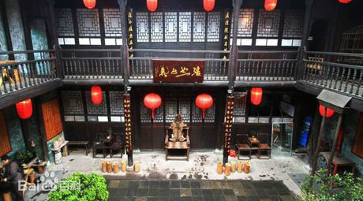

凤凰-陈斗南宅院
凤凰景点介绍
凤凰古城陈斗南宅院建于清光绪28年（1902年），位于古城内吴家弄一号，在东门城楼和杨家祠堂之间，占地面积366.6平方米，由前进、天井、 中堂及后进组成，为四水归堂回廊式院落，四周防火墙高深严密，是江南典型的四合院。
宅院是民国时期的将军府，陈宅出了两位国民革命军少将，陈斗南将军（1886-1931），1924年-1925年间与贺龙为湘西巡防军同僚，关系密切，1926年参加第二次北伐，1928年-1930年间贺龙领导工农革命军鄂南、湘北闹革命受挫来湘西，陈渠珍委派陈斗南志远贺龙领导的工农革命，1931年患恶口疮抢救无效，并故于汉口医院。陈范将军（1909-1943）为陈斗南之侄，1937年率部参加抗日战争，血战嘉善。2005年中共中央授予中国人民抗日战争胜利60周年纪念奖状及奖章。
陈氏祖宗泥塑像是泥人张传人张秋谭大师的封世之作，被专家、教授赞誉为国家级乃至世界级泥塑艺术精品。宅院是《乌龙山剿匪记》、《末代苗王》、《我心飞翔》、《湘西往事》等十多部著名影视剧内景拍摄之地。
景区须知
① 景区开放时间：8：00—18：00 ② 儿童票：身高1.0米—1.3米半票，1.0米以下免票 ③ 预订老年票、军官票须凭证购买